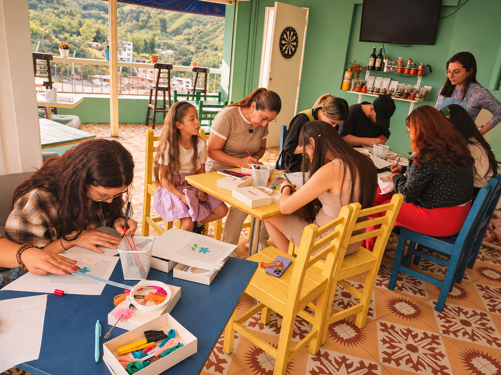
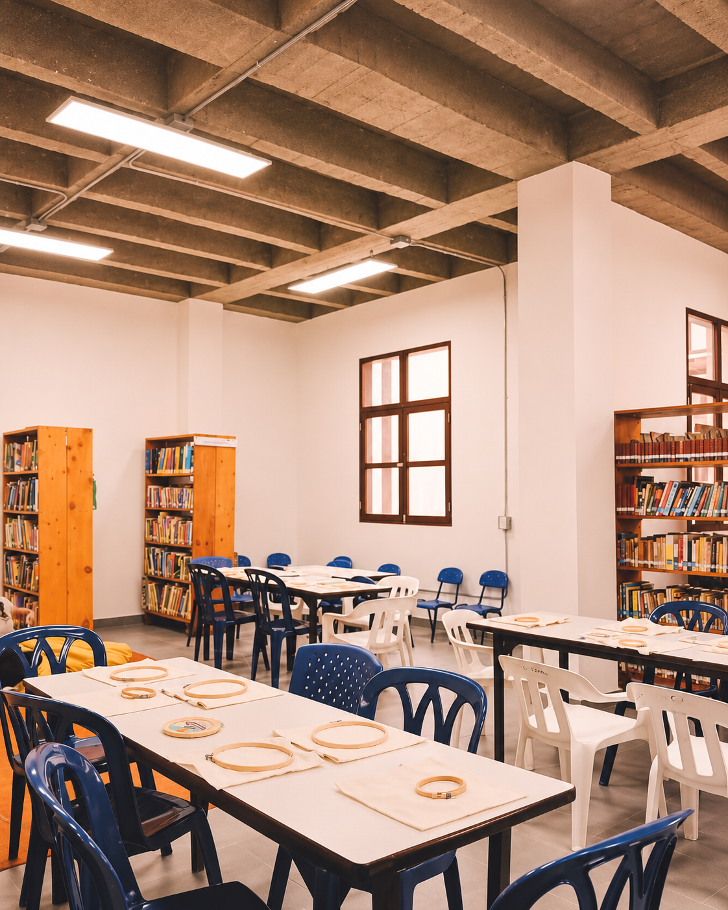
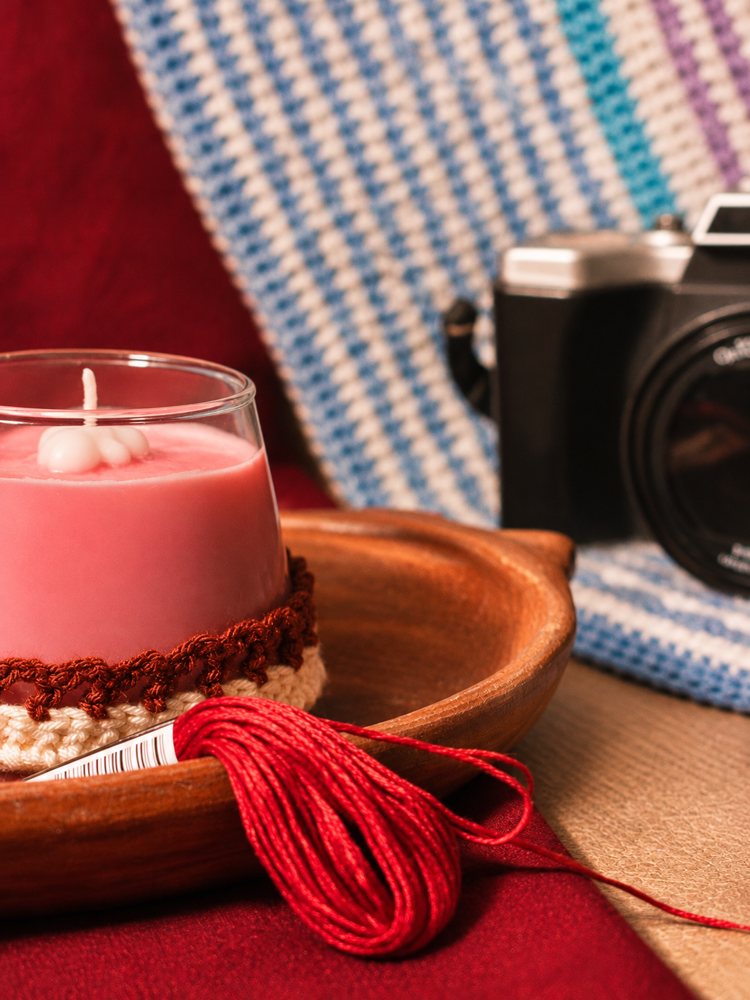

APRENDIZAJE Y EXPLORACIÓN
Técnicas de bordado
Exploramos diferentes formas de bordar y crear: fotobordado, bordado sobre tela, bordado sobre prendas y técnica punto de cruz.
Ver próximas fechas →Descubre nuevas formas de crear, experimentar y compartir a través del bordado.
Desde las técnicas textiles hasta las alianzas creativas, hay muchas formas de encontrarnos alrededor de lo hecho a mano.
Exploramos diferentes formas de bordar y crear: fotobordado, bordado sobre tela, bordado sobre prendas y técnica punto de cruz.
Ver próximas fechas →
Espacios para aprender, experimentar y desarrollar habilidades creativas a través del hilo y la aguja.
Ver próximas fechas →
Piezas y objetos textiles hechos a mano que combinan creatividad, diseño y el valor de los procesos artesanales.
Explorar creaciones →
Diseñamos experiencias a la medida para celebrar, compartir y crear en ocasiones especiales.
Consultar experiencia →
Experiencias creativas para equipos y organizaciones que buscan fortalecer sus vínculos a través de actividades hechas a mano.
Consultar encuentro →
Acompañamos a marcas y proyectos en el desarrollo de propuestas creativas que integran el bordado como elemento de diseño, expresión y diferenciación. Transformamos ideas, productos y conceptos en experiencias y creaciones textiles hechas a mano.
Proponer una alianza →Si quieres empezar desde cero, explorar el bordado floral, personalizar una prenda, compartir con amigas o proponer una actividad privada, encontramos una experiencia para ti.
Cuéntanos qué imaginas ↗Revisa nuestra programación mensual y consúltanos por WhatsApp sobre disponibilidad y materiales.